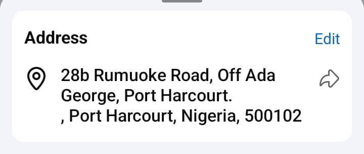

Inspiring worship | Thoughtful teachings | Compassionate community 💯
Join us for spiritual growth, community, and transformation ♥️
Address:
The church started in 2005 at a member's compound and was dedicated by His Lordship Bishop Rt. Rev Budu Wisdom Ihunnwo on September 29th, 2024 on the Servant of God Rev. Canon Nnaemeka Anyachor.
WhatsApp: +2347039074576